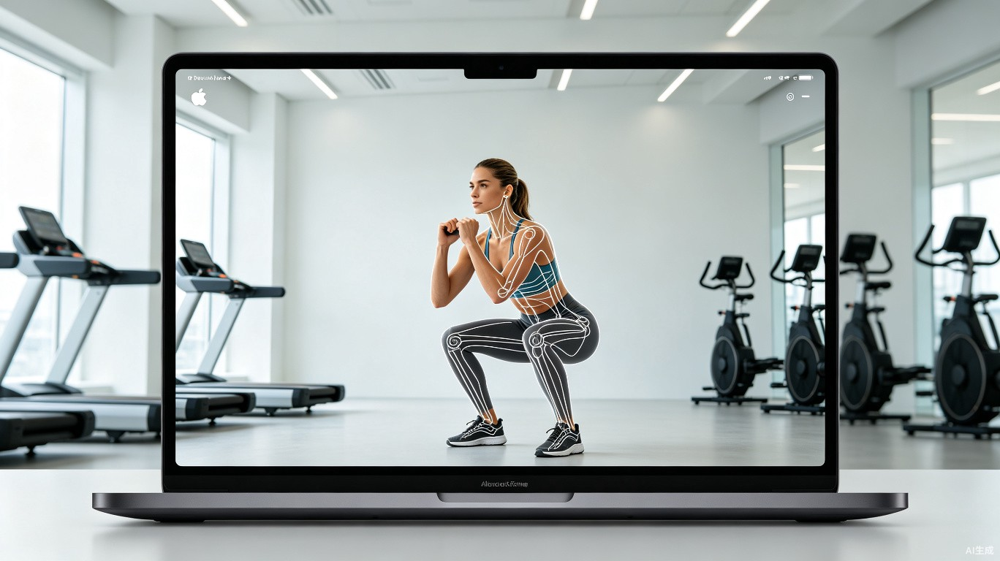

护动智眸
运动训练
统计分析
中/EN

RTMPose · 实时检测
30 FPS
85
动作评分
安全
动作标准，继续保持！关节角度在安全范围内。
安全
89
警告
8
危险
3
↑
0
↓
已完成
准备开始
深蹲
俯卧撑
平板支撑
仰卧起坐
轻量模型
标准模型
高精度模型
摄像头 0
摄像头 1
旋转视频
骨架显示
镜像
GPU 加速
−
重置
确认
+
RTMPose · 实时检测 | 30 FPS | 轻量模型 · CPU